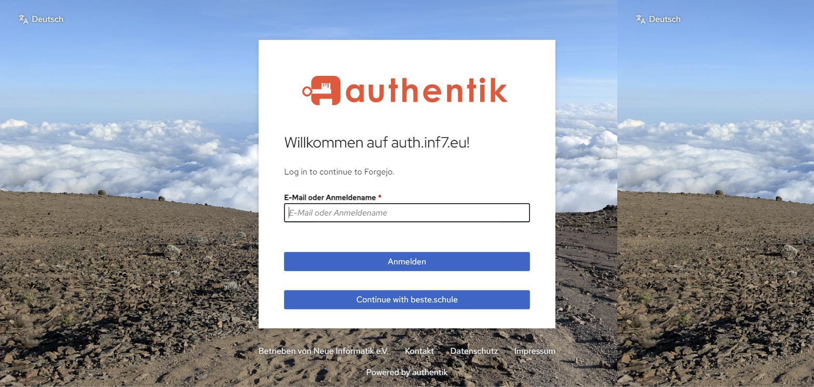
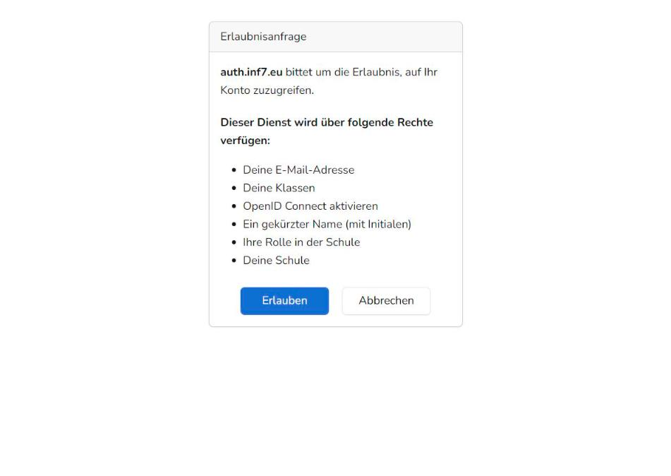
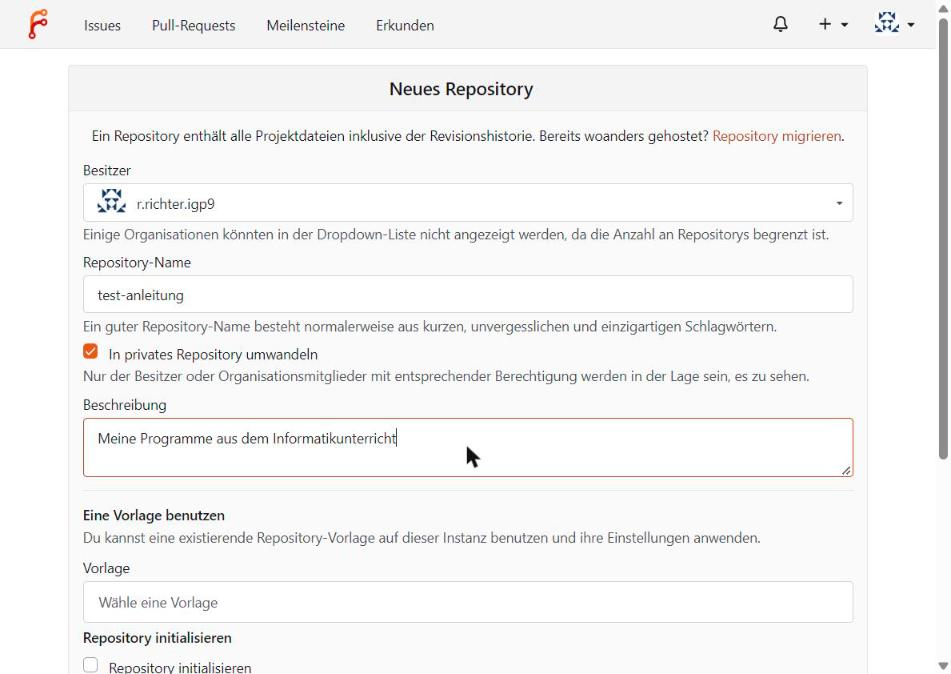
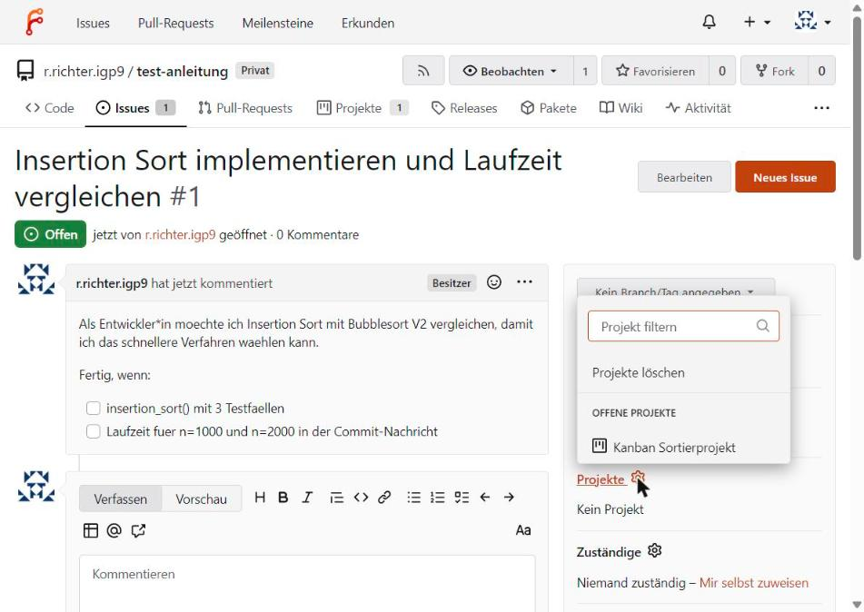
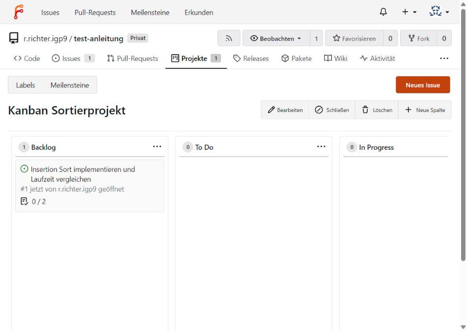

Überblick › LB 10/11 KI und Projektmanagement
10.3 Versionsverwaltung mit Git
1. Warum Versionsverwaltung – und was jetzt neu ist
Stell dir vor, deine Projektgruppe arbeitet gemeinsam an einem KI-Projekt. Am Ende des Tages liegen auf dem gemeinsamen Laufwerk Dateien wie modell.ipynb, modell_neu.ipynb, modell_neu_v2.ipynb und schließlich modell_endgueltig_FINAL_wirklich.ipynb. Niemand weiß mehr genau, welche Fassung die aktuelle ist, wer welchen Teil geschrieben hat und ob die Änderungen von gestern noch enthalten sind. Im schlimmsten Fall speichert ein Teammitglied seine Fassung und überschreibt damit versehentlich die Arbeit eines anderen.
Eine Versionsverwaltung (englisch: version control) löst genau dieses Problem: Sie speichert jeden Änderungsstand eines Projekts nachvollziehbar ab, zeigt, wer was wann geändert hat, und hält jeden früheren Stand wiederherstellbar bereit. Das mit Abstand verbreitetste Werkzeug dafür ist Git. Git wird in nahezu jedem professionellen Softwareprojekt eingesetzt und ist fester Bestandteil des Lehrplans für den Leistungskurs Informatik.
Was du schon kannst: Den Einstieg in Git kennst du aus dem Programmierblock (siehe Kurs „Programmieren und Algorithmen“, Seite 2.1.8). Dort hast du auf git.inf7.eu ein eigenes Repository angelegt, Dateien über die Weboberfläche hochgeladen, Commits mit Commit-Nachrichten erzeugt, die Historie gelesen und zwei Versionen einer Datei verglichen. Die ausführliche, bebilderte Anleitung zu allen Schaltflächen findest du dort.
Was auf dieser Seite neu ist: Im KI-Projekt arbeitet ihr zu dritt in einem gemeinsamen Gruppenrepository. Damit das ohne Chaos funktioniert, braucht ihr klare Regeln: Wer bearbeitet welche Datei? Wie sehen gute Commit-Nachrichten aus? Wie plant ihr eure Aufgaben mit Issues und einem Kanban-Board? Und wie lest ihr aus der Historie ab, was im Team passiert ist?
Kurz wiederholt: die wichtigsten Handgriffe auf git.inf7.eu
- Datei hochladen: Repository → „Datei hinzufügen ▾“ → „Datei hochladen“ → Datei in das Feld ziehen → im Kasten „Änderungen committen“ eine eigene Nachricht in die erste Zeile schreiben → „Direkt in den Branch ‚main‘ einchecken.“ ausgewählt lassen → „Änderungen committen“.
- Neue Version: dieselbe Datei mit genau demselben Namen erneut hochladen. Ein anderer Name ergibt eine zweite Datei.
- Im Browser bearbeiten: Datei öffnen → Stift → „Vorschau“ bzw. „Vorschau der Änderungen“ prüfen → committen.
- Historie: „… Commits“ auf der Repository-Seite (alle Commits) bzw. „Verlauf“ in der Dateiansicht (nur diese Datei).
- Vergleichen: Klick auf eine SHA → rot
-entfernt, grün+hinzugefügt. - Alter Stand: Commit-Liste → „An diesem Punkt im Verlauf anzeigen“; zurück über die Branch-Auswahl
main. - Herunterladen: Dateiansicht → Pfeil (Herunterladen) oder „Originalformat“.
2. Grundbegriffe
Die ersten vier Begriffe kennst du schon, die übrigen kommen für die Teamarbeit dazu:
- Repository (kurz: Repo): der „Projektordner“, in dem Git alle Dateien und die gesamte Historie aller Änderungen speichert. Euer Gruppenrepository liegt auf git.inf7.eu.
- Commit: ein gespeicherter Änderungsstand, vergleichbar mit einem Speicherpunkt in einem Videospiel. Jeder Commit hat eine Commit-Nachricht, eine Autorin bzw. einen Autor, einen Zeitpunkt und eine Kennung (SHA).
- Historie: die Liste aller Commits, die neuesten oben. Für jede einzelne Datei kannst du dir auch nur ihre eigene Historie anzeigen lassen („Verlauf“).
- Versionen vergleichen (Diff): die Gegenüberstellung zweier Stände einer Datei. Entfernte Zeilen sind mit
-(meist rot), hinzugefügte mit+(meist grün) markiert. - Mitarbeiter: Personen, die ein Repository in den Einstellungen unter „Mitarbeiter“ eingetragen hat. Mit Schreibrechten dürfen sie Dateien hochladen und Commits erzeugen.
- Issue: ein Eintrag im Repository, der eine Aufgabe, eine User Story oder einen Fehler beschreibt. Ein Issue hat eine Nummer (z. B.
#4), kann einer Person zugewiesen, mit Labels versehen, kommentiert und geschlossen werden. - Projekt (Board): ein Kanban-Board im Repository. Die Karten sind Issues, die ihr zwischen Spalten wie „Backlog“, „To Do“, „In Progress“ und „Done“ verschiebt (vgl. 10.2).
Hinweis: Und was ist mit Push, Pull, Branch und Merge?
Wer Git auf dem eigenen Rechner installiert hat, erzeugt Commits zunächst lokal und überträgt sie mit git push auf den Server; mit git pull holt man die Commits der anderen. Ihr arbeitet über die Weboberfläche: Beim Hochladen entsteht der Commit direkt auf dem Server, Push und Pull braucht ihr deshalb nicht.
Branches (parallele Entwicklungslinien), Pull-Requests und das Zusammenführen mit Merge einschließlich Merge-Konflikten lernst du später im Lernbereich Softwareentwicklung kennen (Ausblick in Abschnitt 9). Im KI-Projekt arbeiten alle im Hauptbranch main, und die Regeln aus Abschnitt 3 sorgen dafür, dass ihr euch nicht in die Quere kommt.
3. Euer Gruppenrepository auf git.inf7.eu
Wir nutzen den Git-Server git.inf7.eu. Er läuft mit der freien Software Forgejo und wird vom Verein Neue Informatik e.V. für den Informatikunterricht betrieben. Du meldest dich dort mit deinem Zugang zu beste.schule an. Eine private E-Mail-Adresse oder ein Konto bei einem fremden Anbieter brauchst du nicht.
Hinweis: Die Bilder auf dieser Seite
Die Bilder sind echte Bildschirmfotos von git.inf7.eu (Forgejo 16.0.5, deutsche Oberfläche). Das Beispiel-Repository heißt dort test-anleitung, und wo der Benutzername der Lehrkraft zu sehen ist, steht bei dir dein Benutzername. Einige Beschriftungen sind englisch geblieben, z. B. die Spaltennamen „To Do“ und „In Progress“ im Board. Mit neuen Versionen können sich Beschriftungen leicht ändern; sucht dann nach dem sinngemäß passenden Eintrag.
3.0 Anmelden (kompakt)
git.inf7.euöffnen → oben rechts „Anmelden“ → unten „Anmelden mit inf7.eu“. Die Felder für Benutzername und Passwort darüber benutzt du nicht (Bild 1).- Auf
auth.inf7.eudas Feld leer lassen und „Continue with beste.schule“ klicken (Bild 2). - Bei beste.schule wie gewohnt mit Benutzername bzw. E-Mail und Passwort anmelden (Bild 3).
- Nur beim ersten Mal: Die Erlaubnisanfrage zeigt, welche Angaben übertragen werden (E-Mail-Adresse, Klassen, gekürzter Name mit Initialen, Rolle, Schule; „OpenID Connect“ ist das Anmeldeverfahren). Mit „Erlauben“ bestätigen (Bild 4).
- Du landest auf deiner Übersicht. Merke dir deinen Benutzernamen (oben links unter dem Logo): Wer das Gruppenrepository anlegt, braucht ihn, um dich einzutragen.





3.1 Das Repository anlegen
Ein Gruppenrepository legt genau eine Person an. Eure Lehrkraft sagt euch, welcher der beiden Wege gilt:
| Weg A: ein Gruppenmitglied legt an | Weg B: die Lehrkraft legt an | |
|---|---|---|
| Besitzer | das eigene Konto des Gruppenmitglieds | die Organisation der Schule (Bild 6) |
| Wer trägt die anderen ein? | das Gruppenmitglied über Einstellungen → „Mitarbeiter“ (Bild 8) | die Lehrkraft |
| Was ihr tut | Schritte 1–4 unten | nur Schritt 4; das Repository erscheint bei euch, sobald ihr eingetragen seid |

- Neues Repository: „+“ → „Neues Repository“. Name z. B.
ki-projekt-weinsorten(Kleinbuchstaben, Bindestriche, keine Umlaute). „In privates Repository umwandeln“ ankreuzen. Eine Beschreibung in einem Satz eintragen.
Bild 7: Das Formular „Neues Repository“. Der Haken bei „In privates Repository umwandeln“ ist Pflicht. - Initialisieren: weiter unten „Repository initialisieren“ ankreuzen, bei „.gitignore“ die Vorlage „Python“ wählen, „Lizenz“ leer lassen, dann „Repository erstellen“. So gibt es sofort eine
README.mdund einen ersten Commit. - Mitarbeiter eintragen: im neuen Repository Reiter „…“ → Einstellungen → links „Mitarbeiter“. Im Feld „Benutzer suchen …“ den Benutzernamen eines Gruppenmitglieds eingeben, aus der Liste wählen und „Mitarbeiter hinzufügen“ klicken. Für jedes Gruppenmitglied wiederholen. Danach lassen sich die Rechte der Mitarbeiter in der Regel in dieser Liste einstellen: Gruppenmitglieder brauchen Schreibrechte, sonst können sie nichts hochladen. Trag auch die Lehrkraft ein, wenn sie es verlangt.

Bild 8: Einstellungen → „Mitarbeiter“. So kommen die anderen in euer privates Gruppenrepository. Findet die Suche eine Person nicht, hat sie sich vermutlich noch nie auf git.inf7.eu angemeldet. Sie meldet sich einmal an, dann klappt es.
- Kontrolle durch alle: Jedes Gruppenmitglied meldet sich an und prüft, ob das Repository unter „Repositorys“ in der Übersicht erscheint und ob es „Datei hinzufügen“ sieht. Neben dem Namen muss „Privat“ stehen.
3.2 Die Regeln für das Gruppenrepository
Regel 1 – Jede Person arbeitet in ihrem eigenen Notebook. Der Dateiname enthält den Vornamen, z. B. modell_lena.ipynb oder titanic_lena.ipynb. Nur Lena lädt diese Datei hoch.
Regel 2 – Jede gemeinsame Datei hat genau eine verantwortliche Person. README.md (Projektbeschreibung) pflegt z. B. Tom, plan.md (Projektstrukturplan, Gantt-Diagramm mit Soll und Ist, Risiken) pflegt z. B. Ali. Wer dort etwas geändert haben möchte, schreibt es als Kommentar in ein Issue.
Regel 3 – Jeder Commit bekommt eine aussagekräftige Nachricht (Abschnitt 4).
Regel 4 – Lieber oft hochladen als selten. Mindestens am Ende jeder Arbeitsphase, damit nichts im Browser verloren geht und die Historie euren Weg zeigt.
Und immer: vor dem Bearbeiten den neuesten Stand holen. Sieh vor jeder Arbeitsphase in die Commit-Liste: Hat seit deinem letzten Herunterladen jemand die Datei geändert, die du bearbeiten willst? Wenn ja, lade sie neu herunter. Beim Hochladen wird eine gleichnamige Datei nämlich vollständig ersetzt – Git führt dabei nichts zusammen und warnt auch nicht (siehe Beispiel 2).
Warum eigene Notebooks? Ein Jupyter-Notebook ist intern eine lange JSON-Textdatei, die neben dem Code auch alle Ausgaben, Grafiken und Ausführungszähler speichert. Arbeiten zwei Personen an derselben .ipynb-Datei, lassen sich ihre Fassungen kaum zusammenführen, und beim Hochladen ersetzt die zweite Fassung einfach die erste. Mit eigenen Notebooks kann das nicht passieren. Außerdem belegt die Historie dann eindeutig, wer welches Modell trainiert und getestet hat. Genau das braucht ihr im KI-Projekt, denn dort trainiert und testet jede Person ein eigenes Modell (vgl. 10.5).
Ein typisches Gruppenrepository sieht so aus:
ki-projekt-weinsorten/
├── README.md Ziel, Daten, Vorgehen, Ergebnis, Reflexion (verantwortlich: Tom)
├── plan.md PSP, Gantt Soll/Ist, Risiken, Rollen (verantwortlich: Ali)
├── titanic_lena.ipynb Pflicht-Notebook aus KW 47, je Person
├── titanic_tom.ipynb
├── titanic_ali.ipynb
├── modell_lena.ipynb eigenes Projektmodell, je Person
├── modell_tom.ipynb
├── modell_ali.ipynb
├── kanban/ Screenshots des Boards am Ende jedes Sprints
└── praesentation/ Folien als PDFDie Zuständigkeiten gehören gleich oben in die README.md, damit jede Person sie auf der Startseite des Repositorys sieht:
# KI-Projekt Weinsorten
Gruppe: Lena, Tom, Ali (Kurs Informatik)
## Zuständigkeiten
| Datei | verantwortlich |
|------------------|----------------|
| README.md | Tom |
| plan.md | Ali |
| modell_lena.ipynb, titanic_lena.ipynb | Lena |
| modell_tom.ipynb, titanic_tom.ipynb | Tom |
| modell_ali.ipynb, titanic_ali.ipynb | Ali |
## Ziel
…3.3 Der Arbeitsablauf mit JupyterLite
- Neueste Fassung holen: Öffne dein eigenes Notebook im Gruppenrepository und lade es über den Pfeil (Herunterladen) in der Dateiansicht herunter. So arbeitest du sicher mit dem Stand, der auf dem Server liegt.
- Bearbeiten: Öffne jupyterlite.inf7.eu, lade die Datei in den Dateibereich hoch und arbeite darin (vgl. 10.4).
- Herunterladen: Rechtsklick auf die Datei im Dateibereich → Download. JupyterLite speichert nur im Browser, deshalb ist dieser Schritt Pflicht. Prüfe den Dateinamen: Hat der Browser eine Zahl angehängt (
modell_lena(1).ipynb), benennst du die Datei vor dem Hochladen zurück. - Hochladen: Im Gruppenrepository „Datei hinzufügen ▾“ → „Datei hochladen“ wählen und die Datei hineinziehen. Eine gleichnamige Datei wird dabei durch deine neue Fassung ersetzt, die alte bleibt in der Historie erhalten.
- Committen: Commit-Nachricht in die erste Zeile des Kastens „Änderungen committen“ eintragen. Die Auswahl „Direkt in den Branch ‚main‘ einchecken.“ bleibt so, wie sie ist; die zweite Möglichkeit („Einen neuen Branch für diesen Commit erstellen und einen Pull-Request starten.“) wählst du nicht. „Signed-off-by“ und „Commit-E-Mail“ (eine automatische noreply-Adresse) lässt du unverändert. Dann „Änderungen committen“.

Bild 9: Der Kasten „Änderungen committen“. Richtig ist die voreingestellte Option „Direkt in den Branch ‚main‘ einchecken.“ - Kontrollieren: Klick auf „… Commits“: Steht dein Commit oben? Falls nicht, das Hochladen wiederholen.
4. Gute Commit-Nachrichten
Die Historie ist nur so gut wie ihre Commit-Nachrichten. In einem halben Jahr – oder bei der Vorstellung eures Projekts – willst du ohne Öffnen der Dateien erkennen können, was in welchem Commit passiert ist.
- Kurz und konkret: eine Zeile, höchstens etwa 60 Zeichen. Was wurde geändert, bei Bedarf mit dem Ergebnis. Einzelheiten gehören in das Feld „Eine ausführlichere (optionale) Beschreibung hinzufügen …“.
- Ein Thema pro Commit: Wer zwei unabhängige Dinge erledigt hat, lädt sie in zwei Commits hoch.
- Bezug zum Issue: Mit
#7in der Nachricht verweist du auf Issue Nummer 7. Forgejo verknüpft den Commit dann in der Regel mit diesem Issue. Schreibst ducloses #7in die Nachricht, sollte Forgejo das Issue beim Commit automatisch schließen – probiert es aus und kontrolliert, ob es geklappt hat. - Gemeinsame Arbeit sichtbar machen: Habt ihr zu zweit an einem Rechner gearbeitet, nennt beide Namen, z. B.
(mit Ali). - Den Vorschlag nicht übernehmen: Forgejo schlägt Texte wie „Dateien nach … hochladen“ oder „README.md aktualisiert“ vor. Die sagen nichts über den Inhalt.
| schwach | besser |
|---|---|
Update modell_tom.ipynb | k-NN: k = 5 per Validierung gewählt (0,91 statt 0,87) |
fertig | Konfusionsmatrix der Testdaten ergänzt (#7) |
Änderungen | zwei Commits: Min-Max-Skalierung vor k-NN eingebaut und Tests: drei eigene Testfälle ergänzt |
5. Aufgaben planen mit Issues und Board (Kanban)
Euer Kanban-Board führt ihr direkt im Gruppenrepository. Dann liegen Planung, Code und Historie an einem Ort. Kurz im Überblick:
- Issues anlegen: Jede Aufgabe bzw. User Story (vgl. 10.2) wird ein Issue. Der Titel benennt die Aufgabe, die Beschreibung enthält ein Akzeptanzkriterium („fertig, wenn …“). Das Issue wird einer Person zugewiesen und bekommt bei Bedarf ein Label, z. B.
Sprint 1, oder einen Meilenstein, z. B.Zwischenabgabe KW 49. - Board anlegen: Unter „Projekte“ legt ihr ein Projekt mit der Vorlage „Einfaches Kanban“ an und ordnet ihm die Issues als Karten zu.
- Arbeiten: Wer eine Aufgabe beginnt, schiebt die Karte nach „In Progress“. Wer fertig ist, schiebt sie nach „Done“ und schließt das Issue.
- Verlauf sichern: Das Board zeigt immer nur den aktuellen Stand. Deshalb lädt die verantwortliche Person am Ende jedes Sprints einen Screenshot des Boards in den Ordner
kanban/hoch, z. B.kanban/sprint1_KW48.png. Diese Screenshots bilden den Kanban-Verlauf, der zur Projektdokumentation gehört (vgl. 10.6).
5.1 Ein Issue als User Story anlegen
- Reiter „Issues“ → „Neues Issue“.
- Titel: kurz und als Aufgabe formuliert, z. B. „Insertion Sort implementieren und Laufzeit vergleichen“.
- Beschreibung im Reiter „Verfassen“: die User Story nach dem Satzschema aus 10.2 und darunter das Akzeptanzkriterium als Aufgabenliste. In Markdown schreibst du dafür
- [ ]vor jeden Punkt:
Die Werkzeugleiste über dem Textfeld hilft beim Formatieren: Überschrift, fett, kursiv, Zitat, Code, Link, Aufzählung, nummerierte Liste, Aufgabenliste, Einrückung, Tabelle, @-Erwähnung einer Person und Querverweis auf ein anderes Issue. Unter dem Textfeld kannst du Dateien anhängen („Dateien zum Hochladen hier ablegen oder klicken.“).Als Entwickler*in möchte ich Insertion Sort mit Bubblesort V2 vergleichen, damit ich das schnellere Verfahren wählen kann. Fertig, wenn: - [ ] insertion_sort() mit 3 Testfällen - [ ] Laufzeit für n=1000 und n=2000 in der Commit-NachrichtStolperstein: Drückst du in einer Liste Enter, setzt der Editor
- [ ]in der nächsten Zeile automatisch fort. Tippe es dann nicht noch einmal, sonst steht es doppelt da. Kontrolliere im Reiter „Vorschau“. - Reiter „Vorschau“: Die Aufgabenliste erscheint als Kästchen.

Bild 10: Neues Issue in der Vorschau. Rechts die Seitenleiste. - Seitenleiste rechts (jeweils über das Zahnrad):
Eintrag Bedeutung im Projekt „Kein Branch/Tag angegeben“ bezieht das Issue auf einen Branch; bleibt bei euch leer „Labels“ farbige Etiketten, z. B. Sprint 1oderDaten„Meilenstein“ ein Termin, zu dem mehrere Issues fertig sein sollen, z. B. Zwischenabgabe KW 49„Projekte“ ordnet das Issue einem Board zu (Abschnitt 5.3) „Zuständige“ wer die Aufgabe übernimmt. „Mir selbst zuweisen“ trägt dich selbst ein. - „Issue erstellen“ klicken. Das Issue bekommt eine Nummer (
#1) und das grüne Etikett „Offen“. Mit „Bearbeiten“ änderst du den Titel, mit „Neues Issue“ legst du das nächste an. Darunter ist Platz für Kommentare: Hier besprecht ihr Fragen zur Aufgabe und Änderungswünsche (Regel 2).
Bild 11: Das erstellte Issue #1. Darunter das Kommentarfeld mit Werkzeugleiste.
5.2 Das Board anlegen
- Reiter „Projekte“ → „Neues Projekt“.
- Titel eintragen, z. B. „Kanban KI-Projekt“; die Beschreibung ist optional.
- Bei „Vorlage“ „Einfaches Kanban“ wählen. Die anderen Möglichkeiten: „Ohne“ (leeres Board, alle Spalten selbst anlegen) und „Bug-Triage“ (Spalten für Fehlermeldungen).
- „Kartenvorschau“ legt fest, was auf den Karten zu sehen ist; „Bilder und Text“ kann bleiben.
- „Projekt erstellen“. In der Projektliste lässt sich das Projekt später bearbeiten, schließen oder löschen.

5.3 Issues auf das Board bringen
- Das Issue öffnen und in der Seitenleiste bei „Projekte“ auf das Zahnrad klicken.
- Unter „Offene Projekte“ das Board anklicken. Den Eintrag „Projekte löschen“ darüber nicht anklicken – er dient vermutlich dazu, die Zuordnung wieder zu entfernen.
- Das Issue erscheint als Karte in der ersten Spalte „Backlog“. Die Karte zeigt Titel, Nummer und den Zähler der Aufgabenliste, z. B. „0 / 2“.


5.4 Mit dem Board arbeiten
- Karte verschieben: Karte mit der Maus in die nächste Spalte ziehen. Die Zahl im Spaltenkopf zählt die Karten.
- Spalten: Die Vorlage „Einfaches Kanban“ legt „Backlog“, „To Do“ und „In Progress“ an; weiter rechts folgt vermutlich „Done“ (zur Seite scrollen). Mit „Neue Spalte“ ergänzt ihr eigene Spalten, über „…“ im Spaltenkopf lassen sie sich bearbeiten.
- Oben auf der Board-Seite: „Labels“ und „Meilensteine“ verwalten, „Neues Issue“ direkt aus dem Board anlegen; „Bearbeiten“, „Schließen“, „Löschen“ betreffen das ganze Board – Vorsicht mit „Löschen“.
- Aufgabenliste abhaken: Im Issue lassen sich die Kästchen der Aufgabenliste in der Regel direkt anklicken; der Zähler auf der Karte zählt mit.
- Fertig: Karte nach „Done“, Issue schließen (im Issue unter dem Kommentarfeld) oder per Commit-Nachricht mit
closes #1(Abschnitt 4).

6. Die Historie als Beleg der Einzelanteile
Im KI-Projekt muss sichtbar sein, was jede Person beigetragen hat. Die Historie liefert dafür Belege:
- Commit-Liste (Klick auf „… Commits“): Spalte „Autor“ zeigt für jeden Commit, wer ihn erzeugt hat, „Datum“ wann. Mit „Commits suchen …“ findet ihr Commits über Wörter aus der Nachricht, z. B. eine Issue-Nummer.
- Verlauf einer Datei (Dateiansicht → „Verlauf“): z. B. alle Commits an
modell_lena.ipynb– der Weg von Lenas Modell. - Blame (Dateiansicht → „Blame“): wer welche Zeile zuletzt geändert hat; bei Notebooks wegen des JSON-Formats mühsam, bei
README.mdundplan.mdgut lesbar. - Reiter „Aktivität“: ein Überblick, was in letzter Zeit im Repository passiert ist.
- Issues und Board: wer welche Aufgabe übernommen („Zuständige“) und abgeschlossen hat.

Die Historie zeigt allerdings nur, wer hochgeladen hat (siehe Abschnitt 8). Deshalb gilt: oft hochladen (Regel 4), bei gemeinsamer Arbeit beide Namen in die Nachricht, und die Anteile zusätzlich in der Reflexion der README.md beschreiben.
7. Warum ein eigener Git-Server für den Unterricht?
GitHub (ein US-amerikanisches Unternehmen, gehört zu Microsoft) ist die bekannteste Plattform für Repositories im Internet – in vielen Schulen aber aus Datenschutzgründen nicht einsetzbar: Jede Schülerin und jeder Schüler müsste einen eigenen Account mit E-Mail-Adresse anlegen, und die Daten lägen bei einem außereuropäischen Anbieter. Der Server git.inf7.eu löst das: Ihr meldet euch mit eurem Schulzugang über beste.schule an, übertragen werden nur die Angaben aus der Erlaubnisanfrage (Bild 4), und eure Projekte liegen auf einem Server, der eigens für den Informatikunterricht betrieben wird.
Auch hier gilt: Ins Repository gehören keine Passwörter oder Zugangsdaten, keine personenbezogenen Daten anderer (z. B. Umfragen mit Namen) und keine fremden urheberrechtlich geschützten Dateien. Alles, was ihr einmal committet habt, bleibt in der Historie – auch wenn ihr die Datei später löscht. Und das Gruppenrepository ist immer privat.
8. Grenzen von Git
Wie jedes Werkzeug hat auch Git Vor- und Nachteile:
| Vorteile | Grenzen |
|---|---|
| Nachvollziehbarkeit: Jede Änderung ist Person und Zeitpunkt zugeordnet | Die Historie zeigt, wer hochgeladen hat, nicht, wer nachgedacht hat (Arbeit zu zweit an einem Rechner, Absprachen, Recherche) |
| Gemeinsame Arbeit an einem Ort, ohne Dateien per Mail oder Stick zu verschicken | Bei Notebooks und Binärdateien (Bilder, PDF, Präsentationen) sind Vergleiche schwer lesbar und Zusammenführen kaum möglich |
| Alte Stände bleiben erhalten und sind wiederherstellbar | Ändern mehrere Personen dieselbe Datei, muss von Hand zusammengeführt werden – beim Hochladen ganzer Dateien bemerkt das niemand automatisch |
9. Ausblick: Branches und Pull-Requests
Im Kasten „Änderungen committen“ habt ihr die Option „Einen neuen Branch für diesen Commit erstellen und einen Pull-Request starten.“ gesehen, und das Repository hat die Reiter „Pull-Requests“ und die Anzeige „1 Branch“. Das steckt dahinter:
- Ein Branch ist ein Nebenzweig der Historie. Man ändert dort, ohne
mainzu berühren. - Ein Pull-Request ist der Antrag, die Änderungen eines Branches nach
mainzu übernehmen. Andere sehen sich den Diff an, kommentieren und stimmen zu; erst dann wird zusammengeführt (Merge). - Ändern zwei Branches dieselben Zeilen, entsteht ein Merge-Konflikt, den man von Hand auflöst. Bei Textdateien wie
.pyund.mdgeht das gut, bei Notebooks kaum.
So arbeiten Softwarefirmen. Im KI-Projekt nutzt ihr das noch nicht: Alle committen direkt in main, und die Regeln aus Abschnitt 3.2 verhindern, dass zwei Personen dieselbe Datei ändern. Branches und Pull-Requests lernst du im Lernbereich Softwareentwicklung kennen.
10. Häufige Fehler im Team
| Problem | Ursache und Lösung |
|---|---|
| Ein Gruppenmitglied sieht das Repository nicht. | Es ist noch nicht als Mitarbeiter eingetragen oder hat sich noch nie angemeldet. Einmal anmelden lassen, dann unter Einstellungen → „Mitarbeiter“ eintragen (Abschnitt 3.1). |
| Ein Gruppenmitglied sieht das Repository, aber kein „Datei hinzufügen“. | Es hat nur Leserechte, oder es sieht gerade einen alten Stand (SHA statt main in der Branch-Auswahl). Rechte in der Mitarbeiter-Liste prüfen bzw. zu main wechseln. |
| Eine Änderung ist verschwunden. | Jemand hat eine ältere Fassung derselben Datei hochgeladen (Beispiel 2). Im Verlauf der Datei nachsehen und beide Änderungen in einem neuen Commit zusammenführen. |
Es gibt plötzlich modell_lena(1).ipynb. | Der Browser hat beim Herunterladen eine Zahl angehängt. Überzählige Datei löschen, Datei mit richtigem Namen neu hochladen. |
Im Issue steht - [ ] - [ ]. | Der Editor hat die Aufgabenliste nach Enter schon fortgesetzt. Issue mit „Bearbeiten“ korrigieren. |
| Das Issue erscheint nicht auf dem Board. | Es ist dem Projekt noch nicht zugeordnet: im Issue Zahnrad bei „Projekte“ → Board wählen (Abschnitt 5.3). |
| Versehentlich „neuen Branch … Pull-Request“ gewählt. | Die Änderung liegt nicht in main. Pull-Request abbrechen, die Datei noch einmal mit „Direkt in den Branch ‚main‘ einchecken.“ hochladen; im Zweifel die Lehrkraft fragen. |
| Ein Commit fehlt in der Liste. | Seite neu laden. Fehlt er weiter, das Hochladen wiederholen. |
Praxisbezug: Git im Berufsalltag
Alltag: Die Versionsgeschichte in Online-Dokumenten („Version von gestern wiederherstellen“) folgt derselben Idee wie Git.
Beruf: In Softwareentwicklung, Data Science und Forschung ist Git Standard. Ein ML Engineer versioniert damit Trainingsskripte und Konfigurationen, damit sich jedes Modell später exakt reproduzieren lässt, und plant die Arbeit des Teams in Issues und Boards. Viele Unternehmen und Forschungseinrichtungen betreiben dafür eigene GitLab- oder Forgejo-Server, damit Quellcode und Daten im eigenen Haus bleiben – genau wie der Server, den ihr nutzt.
Das Wichtigste
Versionsverwaltung: dokumentiert jeden Änderungsstand eines Projekts. Sie zeigt, wer wann was geändert hat, hält frühere Stände wiederherstellbar bereit und ermöglicht gemeinsames Arbeiten an einem Projekt.
Repository: der Projektordner, in dem Git alle Dateien und die gesamte Historie speichert.
Commit: ein gespeicherter Änderungsstand mit Commit-Nachricht, Autor, Zeitpunkt und Kennung. Die Nachricht beschreibt aussagekräftig, was geändert wurde.
Historie: die Liste aller Commits, die neuesten oben.
Git und GitHub: Git ist die Versionsverwaltung selbst, GitHub ein Anbieter, der Repositories im Internet bereitstellt. Mit der freien Software Forgejo kann man einen solchen Dienst selbst betreiben.
Grundaufgaben
Aufgabe 10.3.1: Das Gruppenrepository einrichten AFB I
Richtet euer Gruppenrepository für das KI-Projekt ein (Abschnitt 3):
- Meldet euch alle auf git.inf7.eu über „Anmelden mit inf7.eu“ → „Continue with beste.schule“ an und tauscht eure Benutzernamen aus.
- Eine Person legt das private Repository an (falls eure Lehrkraft es nicht schon vorbereitet hat) und trägt die anderen unter Einstellungen → „Mitarbeiter“ mit Schreibrechten ein. Alle prüfen, ob sie „Datei hinzufügen“ sehen.
- Legt fest, wer
README.mdund werplan.mdverantwortet. Die Person fürREADME.mdergänzt die Datei mit Projekttitel, Gruppenmitgliedern und diesen Zuständigkeiten. - Jede Person lädt ihr Titanic-Notebook als
titanic_<vorname>.ipynbmit einer aussagekräftigen Commit-Nachricht hoch.
Notiere zum Schluss, welche Commits die Commit-Liste jetzt zeigt, und erkläre in zwei Sätzen, warum jede Person einen eigenen Dateinamen verwendet.
Aufgabe 10.3.2: Commit-Nachrichten verbessern AFB II
In einem Gruppenrepository stehen diese Commits. Daneben steht, was tatsächlich geändert wurde:
| Nachricht | tatsächliche Änderung |
|---|---|
Update modell_tom.ipynb | Tom hat k bei k-NN von 3 auf 5 geändert, weil die Validierungsgenauigkeit damit von 0,87 auf 0,91 stieg. |
fertig | Ali hat die Konfusionsmatrix der Testdaten ergänzt. Das war Issue #7. |
asdf | Mia hat in plan.md die Ist-Spalte für KW 49 ausgefüllt. |
Änderungen | Lena hat in ihrem Notebook eine Skalierung eingebaut und im Abschnitt „Tests“ am Ende des Notebooks drei Testfälle ergänzt. |
Alle Dateien hochgeladen | Ben hat modell_ben.ipynb, seine Folien in praesentation/ und einen Screenshot des Boards in einem Upload hochgeladen. |
- Formuliere für jede Zeile eine bessere Commit-Nachricht.
- Entscheide für jede Zeile, ob es besser gewesen wäre, die Änderung auf mehrere Commits aufzuteilen, und begründe.
Das kann ich jetzt
Grau steht, was der Lehrplan verlangt, darunter, was das für dieses Thema konkret heißt. Hake einen Punkt ab, wenn er in deinem Hefter zusammengefasst ist und du ihn ohne Hilfe kannst. Wie du ihn zusammenfasst, entscheidest du selbst. Die Haken speichert nur dein Browser.
Lehrplan LB 5 Kennen des Konzepts der Versionsverwaltung bei der Softwareentwicklung